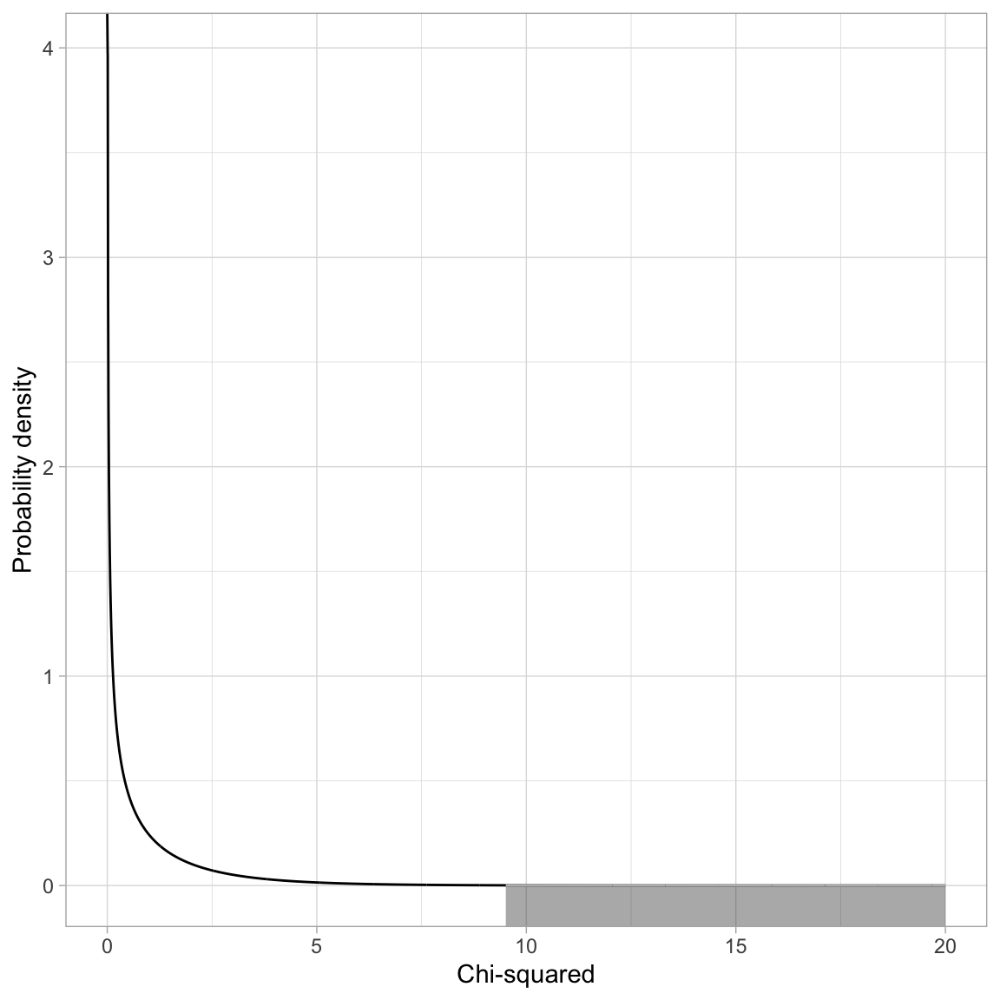

Likelihood: A Framework for Evidence
Preparation
In this set of notes, you will learn about the law of likelihood, and the use of likelihood ratios as statistical evidence for model selection. To do so, we will use the mn-schools.csv dataset (see the data codebook) to examine if (and how) academic “quality” of the student-body (measured by SAT score) is related to institutional graduation rate, and whether this varies by sector (public/private).
# Load libraries
library(broom)
library(tidyverse)
library(gt)
# Import data
mn = read_csv(file = "https://raw.githubusercontent.com/zief0002/bespectacled-antelope/main/data/mn-schools.csv")
# View data
mnModeling Strategy
Any analysis should begin with looking at plots and computing summary statistics of the sample data. For example, I given the research questions, I would look at univariate distributions of the graduation rates, and the median SAT scores. I would also compute summaries of these distributions and counts/proportions of the sector variable. Then I would look at a scatterplot of graduation rates versus median SAT scores, also computing a correlation coefficient if the relationship was linear. Finally, I would re-create the plot and correlation, conditioned on sector. (I will leave this exploration as an exercise for the reader.)
After the data exploration, we can begin to think about fitting one or more models to the data. It is good science to consider the modeling strategy you will be using before you begin fitting models. There are many modeling strategies that educational scientists use in practice (e.g., forward-selection, backward-elimination) and there is no one “right” method. As you consider a modeling strategy, think about how this strategy helps provide a narrative structure for answering your research question; sometimes this leads to one strategy being more productive than others.
Given our research questions, I am going to choose a forward-selection type strategy. This type of strategy has us start with one predictor (the focal predictor) in the model, and then add other predictors (in a pre-specified order) to the model. In our case, the initial model will include only a main effect of median SAT score. The second model will include main effects of both median SAT score and sector, and the final model will include both main effects and the interaction effect.
\[ \begin{split} \mathbf{Model~1:~} \quad \hat{\mathrm{Graduation~Rate}}_i &= \beta_0 + \beta_1(\mathrm{SAT}_i) + \epsilon_i \\[1ex] \mathbf{Model~2:~} \quad \hat{\mathrm{Graduation~Rate}}_i &= \beta_0 + \beta_1(\mathrm{SAT}_i) + \beta_2(\mathrm{Public}_i) + \epsilon_i \\[1ex] \mathbf{Model~3:~} \quad \hat{\mathrm{Graduation~Rate}}_i &= \beta_0 + \beta_1(\mathrm{SAT}_i) + \beta_2(\mathrm{Public}_i) + \beta_3(\mathrm{SAT}_i)(\mathrm{Public}_i) + \epsilon_i \end{split} \]
where \(\epsilon_i \overset{i.i.d.}{\sim}\mathcal{N}(0,\sigma^2_{\epsilon})\) for each of the models.
In terms of narrative, this sequence of models, allows us to write about the effect of SAT, how that affect changes once we account for sector differences, and then whether that effect differs by sector.
Classical Framework of Evidence
When we have looked at statistical evidence to this point, it has been from a hypothesis testing point of view. The primary piece of evidence we use in this paradigm is the p-value. For example, if we fit Model 1 and examine the evidence for the effect of SAT on graduation rates, we find:
# Fit Model 1
lm.1 = lm(grad ~ 1 + sat, data = mn)
# Coefficient-level output
tidy(lm.1)The p-value associated with the effect of SAT is quite small (\(<.001\)). Interpreting this, the probability of seeing the empirical evidence we observed, or evidence that is more extreme, if the null hypothesis that there is no effect of SAT is true, is 0.000000000005. This implies that our observed data are inconsistent with the hypothesized model that there is no effect of SAT. In an applied setting, we might use such evidence to decide that median SAT does indeed predict variation in institutions’ graduation rates.
Despite being the predominant evidential paradigm used in the education and social sciences, hypothesis testing has many criticisms (e.g., Johansson, 2011; Weakliem, 2016). Among some of the stronger criticisms,
- The p-value only measures evidence against the hypothesized model; not the evidence FOR a particular model.
- The model we specify in the null hypothesis is often substantively untenable (how often is the effect 0? Generally as applied scientists the reason we include predictors is because we believe there is an effect.)
- The p-value is based on data we haven’t observed (it is based on the observed data AND evidence that is more extreme).
If we write the p-value as a probability statement, it would be:
\[ p\mbox{-}\mathrm{value} = P(\mathrm{Data~or~more~extreme~unobserved~data} \mid \mathrm{Model}) \]
While hypothesis tests have filled a need in the educational and social science to have some standard for evaluating statistical evidence, it is unclear whether this is the approach we should be using. As statistician David Lindley so aptly states, “[significance tests] are widely used, yet are logically indefensible” (comment in Johnstone, 1986, p. 502). Psychologist Jacob Cohen was more pointed, saying “[hypothesis testing] has not only failed to support the advance of psychology as a science but also has seriously impeded it” (Cohen, 1994, p. 997).
“The main purpose of a significance test is to inhibit the natural enthusiasm of the investigator” (Mosteller & Bush (1954), p. 331–332).
Likelihood Paradigm to Statistical Evidence
In applied science, we ideally would like to collect some evidence (data) and use that to say something about how likely a particular model (or hypothesis) is based on that evidence. Symbolically we want to know,
\[ P(\mathrm{Model} \mid \mathrm{Observed~data}) \]
This probability is known as the likelihood and is very different than the probability given by the p-value. In the likelihood paradigm, the likelihood is the key piece of statistical evidence used to evaluate models. For example if you were comparing Model A and Model B, you could compute the likelihood for each model and compare them. Whichever model has the higher likelihood has more empirical support. This is, in a nutshell what the Law of Likelihood states. What is even more attractive is that another axiom, the Likelihood Principle, tells us that if the goal is to compare the empirical support of competing models, all of the information in the data that can be used to do so, is contained in the ratio of the model likelihoods. That is, we can’t learn more about which model is more supported unless we collect additional data.
Joint Probability Density: A Roadstop to Computing Likelihood
In a previous set of notes, we discussed the probability density of an observation \(x_i\). Now we will extend this idea to the probability density of a set of observations, say \(x_1\), \(x_2\), AND \(x_k\). The probability density of a set of observations is referred to as the joint probability density, or simply joint density.
If we can make an assumption about INDEPENDENCE, then the joint probability density would be the product of the individual densities:
\[ p(x_1, x_2, x_3, \ldots, x_k) = p(x_1) \times p(x_2) \times p(x_3) \times \ldots \times p(x_k) \]
Say we had three independent observations, \(x =\{60, 65, 67\}\), from a \(\sim\mathcal{N}(50,10)\) distribution. The joint density would be:
# Compute joint density
dnorm(x = 60, mean = 50, sd = 10) * dnorm(x = 65, mean = 50, sd = 10) * dnorm(x = 67, mean = 50, sd = 10)[1] 0.000002947448We could also shortcut this computation,
# Compute joint density
prod(dnorm(x = c(60, 65, 67), mean = 50, sd = 10))[1] 0.000002947448This value is the joint probability density. The joint probability density indicates the probability of observing the data (\(x =\{60, 65, 67\}\)) GIVEN (1) they are drawn from a normal distribution and (2) the normal distribution has a mean of 50 and a standard deviation of 10. In other words, the joint probability density is the probability of the data given a model and parameters of the model.
Symbolically,
\[ \mathrm{Joint~Density} = P(\mathrm{Data} \mid \mathrm{Model~and~Parameters}) \]
Computing Likelihood
Likelihood is the probability of a particular set of parameters GIVEN (1) the data, and (2) the data are generated from a particular model (e.g., normal distribution). Symbolically,
\[ \mathrm{Likelihood} = P(\mathrm{Parameters} \mid \mathrm{Model~and~Data}) \]
Symbolically we denote likelihood with a scripted letter “L” (\(\mathcal{L}\)). For example, we might ask the question, given the observed data \(x = \{30, 20, 24, 27\}\) come from a normal distribution, what is the likelihood (probability) that the mean is 20 and the standard deviation is 4? We might denote this as,
\[ \mathcal{L}(\mu = 20, \sigma = 4 \mid x) \]
Although we need to specify the model this is typically not included in the symbolic notation; instead it is often a part of the assumptions.
An Example of Computing and Evaluating Likelihood
The likelihood allows us to answer probability questions about a set of parameters. For example, what is the likelihood (probability) that the data (\(x = \{30, 20, 24, 27\}\)) were generated from a normal distribution with a mean of 20 and standard deviation of 4? To compute the likelihood we compute the joint probability density of the data under that particular set of parameters.
prod(dnorm(x = c(30, 20, 24, 27), mean = 20, sd = 4))[1] 0.0000005702554What is the likelihood (probability) that the same set of data (\(x = \{30, 20, 24, 27\}\)) were generated from a normal distribution with a mean of 25 and standard deviation of 4?
prod(dnorm(x = c(30, 20, 24, 27), mean = 25, sd = 4))[1] 0.00001774012Given the data and the model, there is more empirical support that the parameters are \(\mathcal{N}(25,4^2)\) rather than \(\mathcal{N}(20, 4^2)\), because the likelihood is higher for the former set of parameters. We can compute a ratio of the two likelihoods to quantify the amount of additional support for the \(\mathcal{N}(25,4^2)\).
\[ \begin{split} \mathrm{Likelihood~Ratio} &= \frac{0.00001774012}{0.0000005702554} \\[1ex] &= 31.11 \end{split} \]
The empirical support for the \(\mathcal{N}(25,4^2)\) parameterization is 31 times that of the \(\mathcal{N}(20, 4^2)\) parameterization! In a practical setting, this would lead us to adopt a mean of 25 over a mean of 20.
Some Notes and Caveats
It is important to note that although we use the joint probability under a set of parameters to compute the likelihood of those parameters, theoretically joint density and likelihood are very different. Likelihood takes the data and model as given and computes the probability of a set of parameters. Whereas joint density assumes that the model and parameters are given and gives us the probability of the data.
Likelihood refers to the probability of the parameters and joint probability density refers to the probability of the data.
Once we collect the data, the probability of observing that set of data is 1; it is no longer unknown. The likelihood method treats our data as known and offers us a way of making probabilistic statements about the unknown parameters. This is more aligned with our scientific process than making some assumption about the parameter (e.g., \(\beta_1=0\)) and then trying to deterine the probability of the data under that assumption. Moreover, likelihood does not use unobserved data (e.g., data more extreme than what we observed) in the computation.
It is also important to acknowledge what likelihood and the likelihood ratio don’t tell us. First, they only tell us the probability of a set of parameters for the data we have. Future collections of data might change the amount of support or which set of parameters is supported. Since changing the data, changes the likelihood, this also means we cannot make cross study comparisons of the likelihood (unless the studies used the exact same data). Secondly, the model assumed is important. If a different model is assumed, the likelihood will be different, and again could change the amount of support or which set of parameters is supported.
The likelihood ratio (LR), while useful for comparing the relative support between parameterizations, does not tell you that a particular parameterization is correct. For example, the LR of 31.11 tells us that there is more empirical support for the \(\mathcal{N}(25,4^2)\) parameterization than \(\mathcal{N}(20, 4^2)\). But, there might be even more support for a parameterization we haven’t considered.
These shortcomings are not unique to the likelihood paradigm The also exist in the classical hypothesis testing paradigm for statistical evidence. All in all, the added advantages to the likelihood paradigm make it more useful to applied work than hypothesis testing.
Likelihood in Regression: Back to Our Example
When fitting a regression model, we make certain assumptions about the relationship between a set of predictors and the outcome. For example, in Model 1 from our earlier example, we assume that the relationship between median SAT score and graduation rate can be described by the following model:
\[ \hat{\mathrm{Graduation~Rate}}_i = \beta_0 + \beta_1(\mathrm{SAT}_i) + \epsilon_i \quad \mathrm{where~}\epsilon_i \overset{i.i.d.}{\sim}\mathcal{N}(0,\sigma^2_{\epsilon}) \]
Here we use OLS to estimate the regression coefficients. Then we can use those, along with the observed data to obtain the residuals and the estimate for the residual standard error. The residuals are the GIVEN data and the set up distributional assumptions for the model (e.g., normal, mean of 0, constant variance) allow us to compute the likelihood for the entire set of parameters in this model (\(\beta_0\), \(\beta_1\), \(\sigma^2_{\epsilon}\)).
Below is a set of syntax to compute the likelihood, based on fitting lm.1. We use the resid() function to compute the residuals. (It is the same as grabbing the column called .resid from the augment() output.) We also use the estimated value of the residual standard error (\(\hat{\sigma}_{\epsilon} = 7.79\)) from the glance() output.
# Compute likelihood for lm.1
prod(dnorm(x = resid(lm.1), mean = 0, sd = 7.79))[1] 4.71647e-50This value by itself is somewhat meaningless. It is only worthwhile when we compare it to the likelihood from another model. For example, let’s compute the likelihood for lm.2 and compare this to the likelihood for lm.1. Remember that lm.2 also included sector, in addition to the median SAT score. In lm.2, \(\hat{\sigma}_{\epsilon} = 6.86\)
# Fit Model 2
lm.2 = lm(grad ~ 1 + sat + public, data = mn)
# Get RSE for use in likelihood
glance(lm.2)# Compute likelihood for lm.2
prod(dnorm(x = resid(lm.2), mean = 0, sd = 6.86))[1] 5.231164e-48The likelihood value for lm.2 is higher than the likelihood value for lm.1. Computing the likelihood ratio:
5.231164e-48 / 4.71647e-50[1] 110.9127This suggests that given the data, Model 2 is 110.91 times more likely than Model 1. In practice, we would adopt Model 2 over Model 1 because it is more likely given the evidence we have.
Mathematics of Likelihood
Being able to express the likelihood mathematically is important for quantitative methodologists as it allows us to manipulate and study the likelihood function and its properties. It also gives us insight into how the individual components of the likelihood affect its value.
Remember, we can express the likelihood of the regression residuals mathematically as:
\[ \mathcal{L}(\beta_0, \beta_1 | \mathrm{data}) = p(\epsilon_1) \times p(\epsilon_2) \times \ldots \times p(\epsilon_n) \]
where the probability density of each residual (assuming normality) is:
\[ p(\epsilon_i) = \frac{1}{\sigma\sqrt{2\pi}}\exp\left[-\frac{(\epsilon_i-\mu)^2}{2\sigma^2}\right] \]
In addition to normality, which gives us the equation to compute the PDF for each residual, the regression assumptions also specify that each conditional error distribution has a mean of 0 and some variance (that is the same for all conditional error distributions). We can call it \(\sigma^2_{\epsilon}\). Substituting these values into the density function, we get,
\[ \begin{split} p(\epsilon_i) &= \frac{1}{\sigma_{\epsilon}\sqrt{2\pi}}\exp\left[-\frac{(\epsilon_i-0)^2}{2\sigma^2_{\epsilon}}\right] \\[1em] &= \frac{1}{\sigma_{\epsilon}\sqrt{2\pi}}\exp\left[-\frac{(\epsilon_i)^2}{2\sigma^2_{\epsilon}}\right] \end{split} \]
Now we use this expression for each of the \(p(\epsilon_i)\) values in the likelihood computation.
\[ \begin{split} \mathcal{L}(\beta_0, \beta_1 | \mathrm{data}) &= p(\epsilon_1) \times p(\epsilon_2) \times \ldots \times p(\epsilon_n) \\[1em] &= \frac{1}{\sigma_{\epsilon}\sqrt{2\pi}}\exp\left[-\frac{\epsilon_1 ^2}{2\sigma^2_{\epsilon}}\right] \times \frac{1}{\sigma_{\epsilon}\sqrt{2\pi}}\exp\left[-\frac{\epsilon_2^2}{2\sigma^2_{\epsilon}}\right] \times \\ &~~~~~~\ldots \times \frac{1}{\sigma_{\epsilon}\sqrt{2\pi}}\exp\left[-\frac{\epsilon_n^2}{2\sigma^2_{\epsilon}}\right] \end{split} \]
We can simplify this:
\[ \begin{split} \mathcal{L}(\beta_0, \beta_1 | \mathrm{data}) &=\left[ \frac{1}{\sigma_{\epsilon}\sqrt{2\pi}} \right]^n \times \exp\left[-\frac{\epsilon_1^2}{2\sigma^2_{\epsilon}}\right] \times \exp\left[-\frac{\epsilon_2^2}{2\sigma^2_{\epsilon}}\right] \times \ldots \\ &~~~~~~ \times \exp\left[-\frac{\epsilon_n^2}{2\sigma^2_{\epsilon}}\right] \end{split} \] We can also simplify this by using the product notation:
\[ \mathcal{L}(\beta_0, \beta_1 | \mathrm{data}) =\left[ \frac{1}{\sigma_{\epsilon}\sqrt{2\pi}} \right]^n \times \prod_{i=1}^n \exp\left[-\frac{\epsilon_i^2}{2\sigma^2_{\epsilon}}\right] \] We can also write the residuals (\(\epsilon_i\)) as a function of the regression parameters we are trying to find the likelihood for.
\[ \mathcal{L}(\beta_0, \beta_1 | \mathrm{data}) =\left[ \frac{1}{\sigma_{\epsilon}\sqrt{2\pi}} \right]^n \times \prod_{i=1}^n \exp\left[-\frac{\big[Y_i - \beta_0 - \beta_1(X_i)\big]^2}{2\sigma^2_{\epsilon}}\right] \]
where \(\sigma^2_{\epsilon} = \frac{\sum \epsilon_i^2}{n}\). Because the numerator of \(\sigma^2_{\epsilon}\) can be written as \(\sum_i^n\big(Y_i - \beta_0 - \beta_1(X_i)\big)^2\), we see that the likelihood is a function of \(n\), and the regression coefficients, \(\beta_0\) and \(\beta_1\). Moreover, \(n\) is based on the data (which is given) and is thus is a constant. Mathematically, this implies that the only variables (values that can vary) in the likelihood function are the regression coefficients.
Log-Likelihood
The likelihood values are quite small since we are multiplying several probability densities (values between 0 and 1) together. Since it is hard to work with these smaller values, in practice, we often compute and work with the natural logarithm of the likelihood. So in our example, \(\mathcal{L}_1 = 4.71647 \times 10^{-50}\) and the log-likelihood would be:
# Log-likelihood for Model 1
log(4.71647e-50)[1] -113.5782Similarly, we can compute the log-likelihood for Model 2 as:
# Log-likelihood for Model 2
log(5.231164e-48)[1] -108.8695We typically denote log-likelihood using a scripted lower-case “l” (\(\mathcal{l}\)). Here,
\[ \begin{split} \mathcal{l}_1 &= -113.5782 \\[1ex] \mathcal{l}_2 &= -108.8695 \\[1ex] \end{split} \]
Note that the logarithm of a decimal will be negative, so the log-likelihood will be a negative value. Less negative log-likelihood values correspond to higher likelihood values, which indicate more empirical support. Here Model 2 has a less negative log-likelihood value (\(-108\)) than Model 1 (\(-113\)), which indicates there is more empirical support for Model 2 than Model 1.
We can also express the likelihood ratio using log-likelihoods. To do so we take the natural logarithm of the likelihood ratio. We also re-write it using the rules of logarithms from algebra.
\[ \begin{split} \ln(\mathrm{LR}) &= \ln \bigg(\frac{\mathcal{L}_2}{\mathcal{L}_1}\bigg) \\[2ex] &= \ln \big(\mathcal{L}_2\big) - \ln \big(\mathcal{L}_1\big) \end{split} \]
That is, we can find an equivalent relative support metric to the LR based on the log-likelihoods by computing the difference between them. For our example:
# Difference in log-likelihoods
log(5.231164e-48) - log(4.71647e-50)[1] 4.708743# Equivalent to ln(LR)
log(5.231164e-48 / 4.71647e-50)[1] 4.708743Unfortunately, this difference doesn’t have the same interpretational value as the LR does, bcause this difference is in log-units. In order to get that interpretation back, we need to exponentiate (the reverse function of the logarithm) the difference:
# Exponentiate the difference in log-likelihoods
exp(4.708743)[1] 110.9127Model 2 has 110.9 times the empirical support than Model 1.
Mathematics of Log-Likelihood
We can express the log-likelihood of the regression residuals mathematically by taking the natural logarithm of the likelihood we computed earlier:
\[ \begin{split} \ln \Bigl(\mathcal{L}(\beta_0, \beta_1 | \mathrm{data})\Bigr) &= \ln \Biggl( \left[ \frac{1}{\sigma_{\epsilon}\sqrt{2\pi}} \right]^n \times \exp\left[-\frac{\epsilon_1^2}{2\sigma^2_{\epsilon}}\right] \times \\ &~~~~~~ \exp\left[-\frac{\epsilon_2^2}{2\sigma^2_{\epsilon}}\right] \times \ldots \times \exp\left[-\frac{\epsilon_n^2}{2\sigma^2_{\epsilon}}\right] \Biggr) \\ \end{split} \]
Using our rules for logarithms and re-arranging gives,
\[ \mathcal{l}(\beta_0, \beta_1 | \mathrm{data}) = -\frac{n}{2} \times \ln (2\pi\sigma^2_{\epsilon}) - \frac{1}{2\sigma^2_{\epsilon}} \times \sum \epsilon_i^2 \]
Examining this equation, we see that the log-likelihood is a function of \(n\), \(\sigma^2_{\epsilon}\) and the sum of squared residuals (SSR)1. We can of course, re-express this using the the regression parameters:
\[ \mathcal{l}(\beta_0, \beta_1 | \mathrm{data}) = -\frac{n}{2} \times \ln (2\pi\sigma^2_{\epsilon}) - \frac{1}{2\sigma^2_{\epsilon}} \times \sum \big[Y_i - \beta_0 - \beta_1(X_i)\big]^2 \]
And, again, since \(\sigma^2_{\epsilon}\) is a function of the regression coefficients and \(n\), this means that the only variables in the log-likelihood function are the coefficients.
Shortcut: The logLik() Function
The logLik() function can be used to obtain the log-likelihood directly from a fitted model object. For example, to find the log-likelihood for Model 1, we can use:
# Compute log-likelihood for Model 1
logLik(lm.1)'log Lik.' -113.5472 (df=3)The df output tells us how many total parameters are being estimated in the model. In our case this is three (\(\beta_0\), \(\beta_{\mathrm{SAT}}\), and \(\sigma^2_{\epsilon}\)). What is more important to us currently, is the log-likelihood value; \(\mathcal{l}_1=-113.55\).
This value is slightly different than the log-likelihood we just computed of \(-113.58\). This is not because of rounding in this case. It has to do with how the model is being estimated; the logLik() function assumes the parameters are being estimated using maximum likelihood (ML) rather than ordinary least squares (OLS). We will learn more about this in the next set of notes, but for now, we will just use logLik() to compute the log-likelihood.
Here we compute the log-likelihood for Model 2 using the logLik() function. We also use the output to compute the likelihood, and the likelihood ratio between Model 2 and Model 1
# Compute log-likelihood for Model 2
logLik(lm.2)'log Lik.' -108.7964 (df=4)# Compute likelihood for Model 2
exp(logLik(lm.2)[1])[1] 5.627352e-48# Compute LR
exp( logLik(lm.2)[1] - logLik(lm.1)[1] )[1] 115.6734Because the output from logLik() includes extraneous information (e.g., df), we use indexing (square brackets) to extract only the part of the output we want. In this case, the [1] extracts the log-likelihood value from the logLik() output (ignoring the df part).
Also of note is that the df for Model 2 is four, indicating that this model is estimating four parameters (\(\beta_0\), \(\beta_{\mathrm{SAT}}\), \(\beta_{\mathrm{Sector}}\), and \(\sigma^2_{\epsilon}\)). The value of df in the logLik() output is a quantification of the model’s complexity. Here Model 2 (df = 4) is more complex than Model 1 (df = 3).
As we consider using the likelihood ratio (LR) or the difference in log-likelihoods for model selection, we also need to consider the model complexity. In our example, the likelihood ratio of 115.7 (computed using logLik()) indicates that Model 2 has approximately 116 times the empirical support than Model 1. But, Model 2 is more complex than Model 1, so we would expect that it would be more empirically supported.
In this case, with a LR of 116, it seems like the data certainly support adopting Model 2 over Model 1, despite the added complexity of Model 2. But what if the LR was 10? Would that be enough additional support to warrant adopting Model 2 over Model 1? What about a LR of 5?
Likelihood Ratio Test for Nested Models
One question that arises is, if the likelihood for a more complex model is higher than the likelihood for a simpler model, how large does the likelihood ratio have to be before we adopt the more complex model? In general, there is no perfect answer for this.
If the models being compared are nested, then we can carry out a hypothesis test2 to see if the LR is more than we would expect because of chance. Models are nested when the parameters in the simpler model are a subset of the parameters in the more complex model. For example, in our example, the parameters in Model 1 are a subset of the parameters in Model 2:
\[ \begin{split} \mathbf{Model~1~Parameters:}&\quad\{\beta_0,~\beta_{\mathrm{SAT}},~\sigma^2_{\epsilon}\} \\[1ex] \mathbf{Model~2~Parameters:}&\quad\{\beta_0,~\beta_{\mathrm{SAT}},~\beta_{\mathrm{Sector}},~\sigma^2_{\epsilon}\} \\[1ex] \end{split} \] The parameters for Model 1 all appear in the list of parameters for Model 2. Because of this we can say that Model 1 is nested in Model 2.
Hypothesis Test of the LRT
When we have nested models we can carry out a hypothesis test to decide between the following competing hypotheses:
\[ \begin{split} H_0:& ~\theta_0 = \{\beta_0,~\beta_{\mathrm{SAT}},~\sigma^2_{\epsilon}\}\\[1ex] H_A:& \theta_1 = \{\beta_0,~\beta_{\mathrm{SAT}},~\beta_{\mathrm{Sector}},~\sigma^2_{\epsilon}\} \end{split} \]
where \(\theta_0\) refers to the simpler model and \(\theta_1\) refers to the more complex model. This translates to adopting either the simpler model (fail to reject \(H_0\)) or the more complex model (reject \(H_0\)). To carry out this test, we translate our likelihood ratio to a test statistic called \(\chi^2\) (pronounced chi-squared):
\[ \chi^2 = -2 \ln \bigg(\frac{\mathcal{L}({\theta_0})}{\mathcal{L}({\theta_1})}\bigg) \]
That is we compute \(-2\) times the log of the likelihood ratio where the likelihood for the simpler model is in the numerator. (Note this is the inverse of how we have been computing the likelihood ratio!) Equivalently, we can compute this as:
\[ \chi^2 = -2 \bigg(\ln \bigg[\mathcal{L}({\theta_0})\bigg] - \ln \bigg[\mathcal{L}({\theta_1})\bigg]\bigg) \]
For our example, we compute this using the
# Compute chi-squared
-2 * (logLik(lm.1)[1] - logLik(lm.2)[1])[1] 9.501542Deviance: A Measure of the Model–Data Error
If we re-write the formula for the \(\chi^2\)-statistic by distributing the \(-2\), we get a better glimpse of what this statistic is measuring.
\[ \chi^2 = -2 \ln \bigg[\mathcal{L}({\theta_0})\bigg] - \bigg(-2\ln \bigg[\mathcal{L}({\theta_1})\bigg]\bigg) \]
The quantity \(-2\ln\big[\mathcal{L}(\theta_k)\big]\) is referred to as the residual deviance3 of Model K. It measures the amount of misfit between the model and the data. (As such, when evaluating deviance values, lower is better.) For linear models, with the classic assumptions (\(\overset{i.i.d.}{\sim}\mathcal{N}(0,\sigma^2_{\epsilon})\)), the deviance is a function of the RSS:
\[ \mathrm{Deviance} = n \ln\big(2\pi\sigma^2_{\epsilon}\big) + \frac{\mathrm{RSS}}{\sigma^2_{\epsilon}} \]
where \(\mathrm{RSS}=\sum\epsilon_i^2\) and \(\sigma^2_{\epsilon} = \frac{\mathrm{RSS}}{n}\). This formula illustrates that the residual deviance is a generalization of the residual sum of squares (RSS), and measures the model–data misfit.
Mathematics of Deviance
We can express the deviance mathematically by multiplying the log-likelihood by \(-2\).
\[ \begin{split} \mathrm{Deviance} &= -2 \times\mathcal{l}(\beta_0, \beta_1 | \mathrm{data}) \\[1ex] &= -2 \bigg(-\frac{n}{2} \times \ln (2\pi\sigma^2_{\epsilon}) - \frac{1}{2\sigma^2_{\epsilon}} \times \sum \epsilon_i^2\bigg) \\[1ex] &= -n\ln (2\pi\sigma^2_{\epsilon}) + \frac{1}{\sigma^2_{\epsilon}}\sum \epsilon_i^2 \\[1ex] &= -n\ln (2\pi\sigma^2_{\epsilon}) + \frac{\mathrm{RSS}}{\sigma^2_{\epsilon}} \end{split} \]
Rewriting this using the parameters from the likelihood:
\[ \mathrm{Deviance} = -n\ln (2\pi\sigma^2_{\epsilon}) + \frac{\sum_{i=1}^n \big[Y_i-\beta_0-\beta_1(X_i)\big]^2}{\sigma^2_{\epsilon}} \]
Once again, we find that the only variables in the deviance function are the regression coefficients.
In practice, we will use the logLik() function to compute the deviance.
# Compute the deviance for Model 1
-2 * logLik(lm.1)[1][1] 227.0944# Compute the deviance for Model 2
-2 * logLik(lm.2)[1][1] 217.5929Here the deviance for Model 2 (217.59) is less than the deviance for Model 1 (227.09). This indicates that the data have better fit to Model 2 than Model 1. How much better is the model–data fit for Model 2?
# Compute difference in deviances
227.0944 - 217.5929[1] 9.5015Model 2 improves the fit (reduces the misfit) by 9.5015 over Model 1. This is the value of our \(\chi^2\)-statistic. That is, the \(\chi^2\)-statistic is difference in residual deviance values and measures the amount of improvement in the model–data misfit.
Modeling the Variation in the Test Statistic
If the null hypothesis is true, the difference in deviances can be modeled using a \(\chi^2\)-distribution. The degrees-of-freedom for this \(\chi^2\)-distribution is based on the difference in the number of parameters between the complex and simpler model. In our case this difference is 1 (\(4-3=1\)):
\[ \chi^2(1) = 9.50 \]
Code
# Create dataset
fig_01 = data.frame(
X = seq(from = 0, to = 20, by = 0.01)
) %>%
mutate(
Y = dchisq(x = X, df = 1)
)
# Filter out X<=65
shaded = fig_01 %>%
filter(X >=9.5015)
# Create plot
ggplot(data = fig_01, aes(x = X, y = Y)) +
geom_line() +
xlab("Chi-squared") +
ylab("Probability density") +
theme_light() +
geom_ribbon(data = shaded, ymin = -10, aes(ymax = Y), color = "#bbbbbb", alpha = 0.4)
To compute the p-value we use the pchisq() function.
# Compute p-value for X^2 = 9.5015
1 - pchisq(q = 9.5015, df = 1)[1] 0.00205304# Alternative method
pchisq(q = 9.5015, df = 1, lower.tail = FALSE)[1] 0.00205304Based on the p-value, we would reject the null hypothesis for the likelihood ratio test, which suggests that we should adopt the more complex model (Model 2).
Testing the Interaction Model
We can also use the likelihood ratio test to select between the main effects model (Model 2) and the interaction model (Model 3), since the main effects model is nested in the interaction model. In our example the parameters for the two models are:
\[ \begin{split} \mathbf{Model~2~Parameters:}&\quad\{\beta_0,~\beta_{\mathrm{SAT}},~\beta_{\mathrm{Sector}},~\sigma^2_{\epsilon}\} \\[1ex] \mathbf{Model~3~Parameters:}&\quad\{\beta_0,~\beta_{\mathrm{SAT}},~\beta_{\mathrm{Sector}},~\beta_{\mathrm{SAT}\times\mathrm{Sector}},~\sigma^2_{\epsilon}\} \\[1ex] \end{split} \]
We can see that the parameters for Model 2 are a subset of those for Model 3. Below we fit Model 3 and compute the log-likelihood:
# Fit Model 3
lm.3 = lm(grad ~ 1 + sat + public + sat:public, data = mn)
# Log-likelihood for Model 3
logLik(lm.3)'log Lik.' -108.5022 (df=5)# Likelihood for Model 3
exp(logLik(lm.3)[1])[1] 7.552619e-48# Deviance for Model 3
-2 * logLik(lm.3)[1][1] 217.0044Using the likelihood values for Model 2 (\(5.627352\times 10^{-48}\)) and Model 3 (\(7.552619 \times 10^{-48}\)) we compute the likelihood ratio:
# Likelihood ratio
7.552619e-48 / 5.627352e-48[1] 1.342127The empirical data support Model 3. It is 1.34 times as likely as Model 2 given the data. To test whether this increased likelihood is more than we expect because of chance, we carry out a LRT. We can use the likelihood ratio test because the main effects model (Model 2) is nested in the interaction model (Model 3. The parameters for the two models are:
\[ \begin{split} \mathbf{Model~2~Parameters:}&\quad\{\beta_0,~\beta_{\mathrm{SAT}},~\beta_{\mathrm{Sector}},~\sigma^2_{\epsilon}\} \\[1ex] \mathbf{Model~3~Parameters:}&\quad\{\beta_0,~\beta_{\mathrm{SAT}},~\beta_{\mathrm{Sector}},~\beta_{\mathrm{SAT}\times\mathrm{Sector}},~\sigma^2_{\epsilon}\} \\[1ex] \end{split} \]
We can see that the parameters for Model 2 are a subset of those for Model 3. (Remember we subtract the deviance for the more complex model from the deviance for the simpler model.) The difference in deviances is:
# Chi-squared; Difference in deviance
-2 * logLik(lm.2)[1] - (-2 * logLik(lm.3)[1])[1] 0.588511In these two models, the difference in the number of parameters is \(5 - 4 = 1\), so we can write this as:
\[ \chi^2(1) = 0.59 \]
Evaluating this in a \(\chi^2\)-distribution with 1 degree-of-freedom:
# Compute p-value
pchisq(q = 0.588511, df = 1, lower.tail = FALSE)[1] 0.4429955Based on this p-value, we would adopt the simpler main effects model (Model 2).
Using the lrtest() Function
We can also use the lrtest() function from the {lmtest} package to carry out a likelihood ratio test. We provide this function the name of the model object for the simpler model, followed by the name of the model object for the more complex model.
# Load library
library(lmtest)
# LRT to compare Model 1 and Model 2
lrtest(lm.1, lm.2)We can similarly carry out a LRT to compare Model 2 to Model 3:
# LRT to compare Model 2 and Model 3
lrtest(lm.2, lm.3)We can also get the results of both likelihood ratio tests in a single call to lrtest() by including all three models object names in the function. The first result is the output from the LRT comparing Model 1 to Model 2 and the second result is the LRT comparing Model 2 to Model 3.
# Multiple LRTs
# First LRT to compare Model 1 and Model 2
# Second LRT to compare Model 2 and Model 3
lrtest(lm.1, lm.2, lm.3)References
Footnotes
Sometimes this is also referred to a the sum of squared errors (SSE).↩︎
This is in some sense mixing the paradigms of likelihood-based evidence and classical hypothesis test-based evidence. In a future set of notes we will learn about information criteria which eliminate the need to mix these two paradigms.↩︎
The use of the term “residual deviance” is not universal. Some textbooks omit the “residual” part and just refer to it as the “deviance”. Others use the term “model deviance”.↩︎